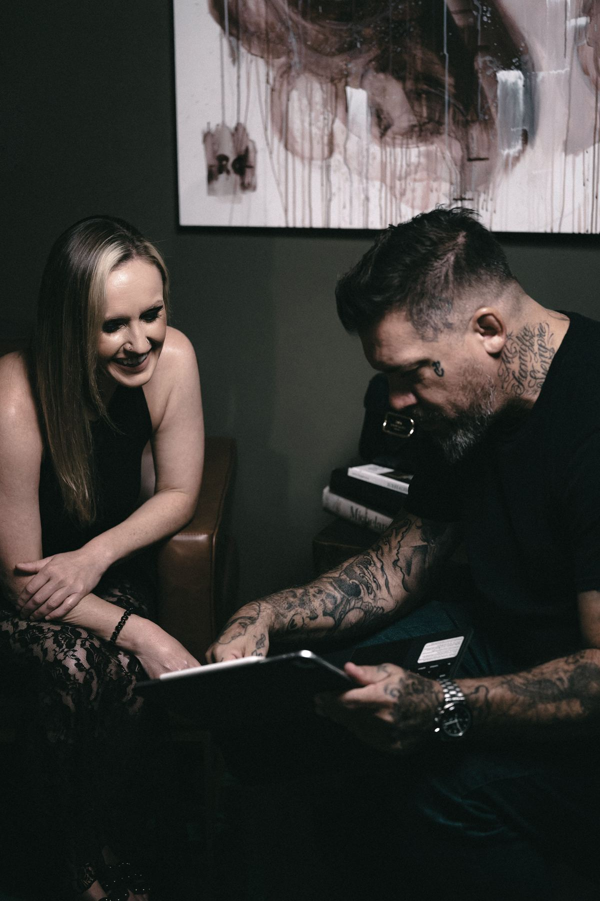
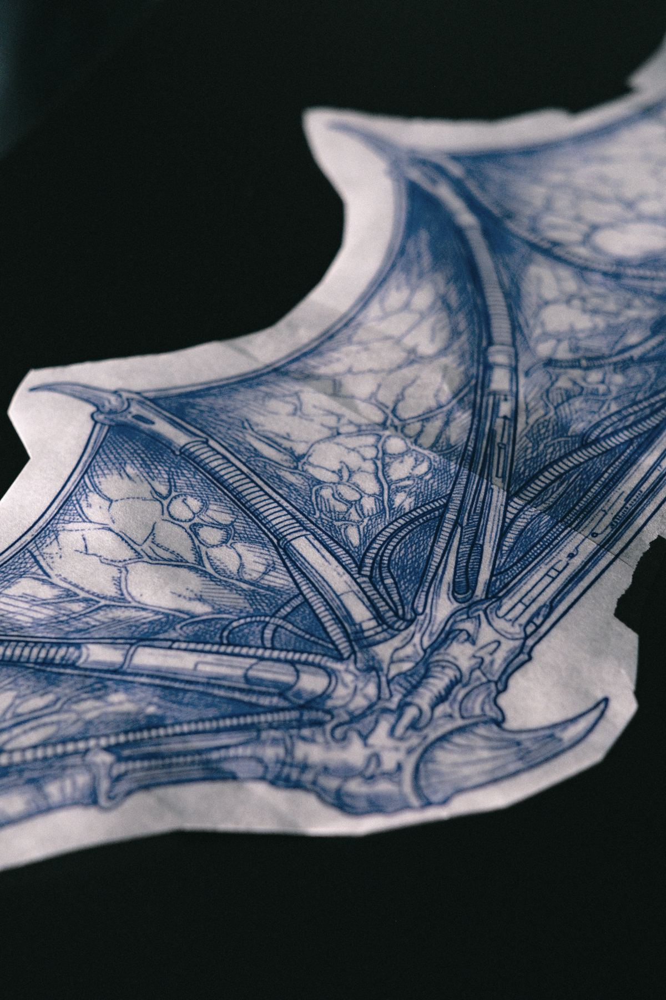
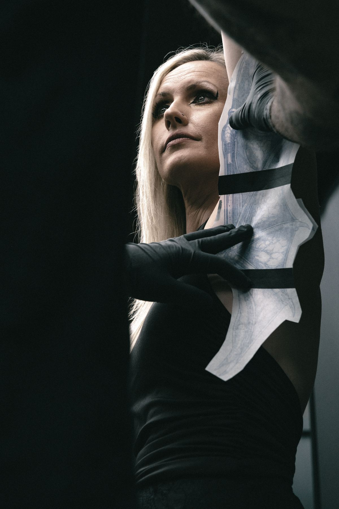
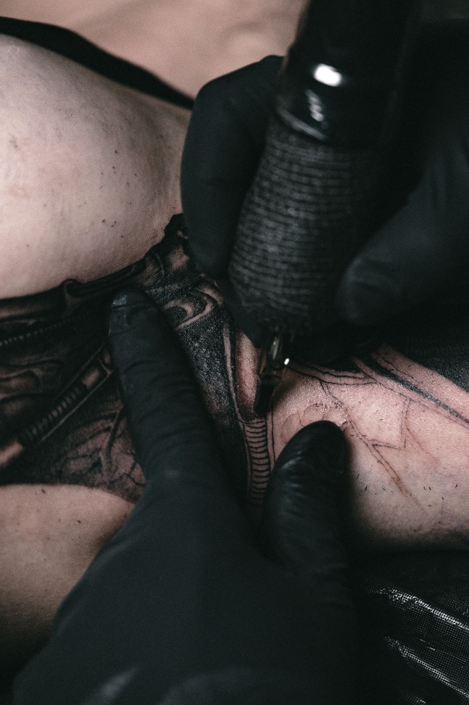
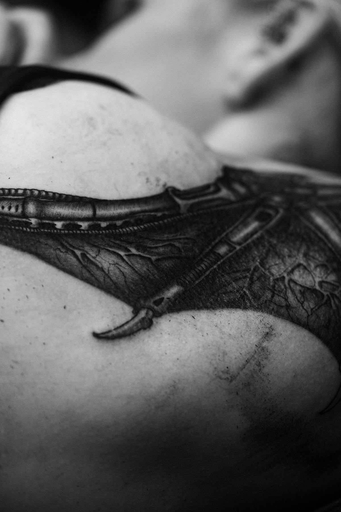
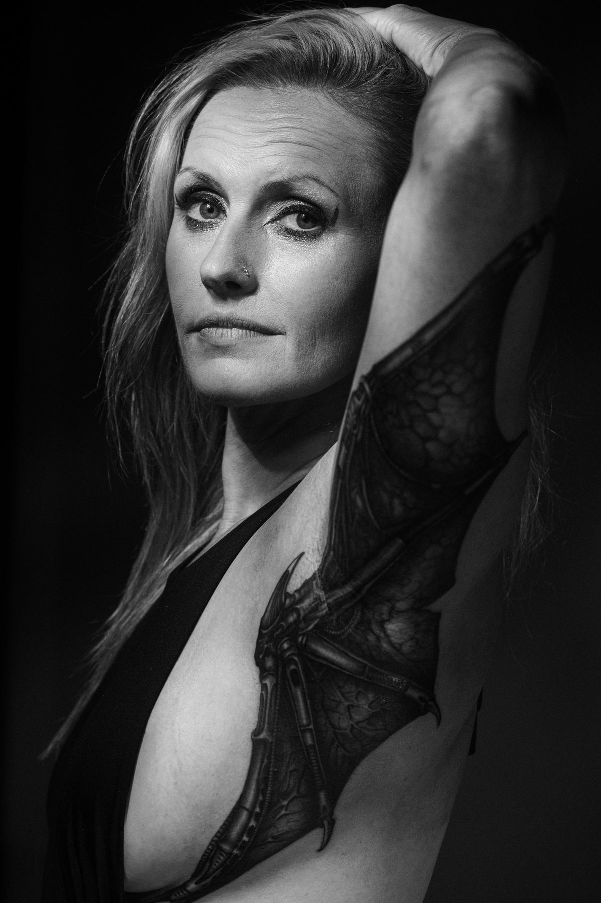
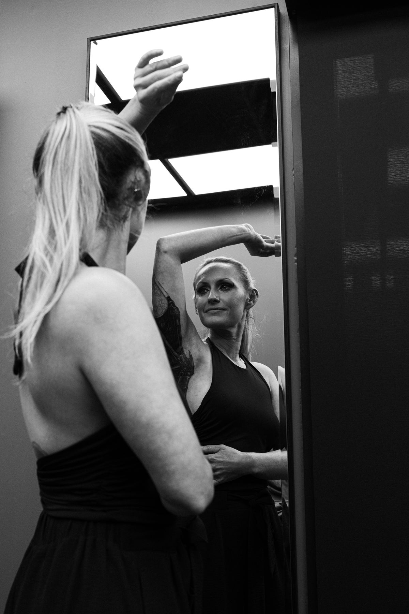

The Archive · 01
The Wing
A large-scale black and grey piece, made for one person and built across sessions on the ribs and side. It was photographed from the first conversation to the moment she saw it in the mirror.
The record runs from color into black and grey on purpose. The making is alive. The finished work is not bound to a day.

Before the first line, there is a conversation.The meeting

It becomes a drawing no one has worn yet.The design

Then it finds the body it was made for.The placement

Hours we don't count. Nothing to prove.The craft

The wing settles into the skin as if it had always been there.The work

What she carried quietly, she now carries in the open.The muse

She meets herself. The work stays.What remains
- Tattoo
- Rafael Cassaro
- Photography
- Gerusa Younes
- Placement
- Ribs and side
- Where
- Boca Raton, Florida
Every piece in the archive began as a conversation.
Start yours